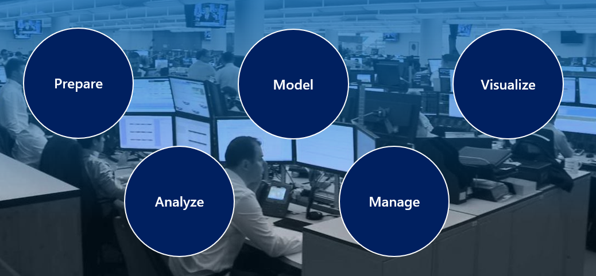

Hello!! I am Olaniyi Bello, and i'm delighted to welcome to welcome you once again to my portfolio space. I am a Business & Data Analsyt with over 5 years of Experience helping organisation
turn data into actionable strategies. My expertise lies in SQL, Power BI, Tableau, Excel, and Power Automate (Microsoft Office Suite), where i specialise in building interactive dashboards,
automatingreporting workflows, and delivering insights that improve decision-making and performance.
My journey into data began during my MSc in Advanced Petroleum Engineering, where i had to use business intelligence tools to support one of my reserch projects. It was here that i first
discovered how powerful data can be in uncovering patterns, simplifying complexities, and guiding decisions. That experience sparked my passion for data analytics and business intelligence,
and since then, that passion has only grown stronger.
I've since applied data-driven solutionss across reatil, healthcare, energy, and consulting, tackling challenges such as:
-
Retail Analytics: Understanding sales trends, supply chain bottlenecks, and customer behaviour to drive profitability and operational efficiency.
-
Healthcare Insights: Analysing patent flow, medication audits, and workforce data to strengthen compliance and optimise resources.
-
Business operations: Building dashboards and predictive models to track KPIs, forecast demand, and improve efficiency by up to 30%.
Some highlights of my work include:
-
Delivering SQL, Tableau and Power BI dashbords that improved marketing ROI and forecasting accuracy for international clients.
-
Publishing real-world BI projects oon GitHub, Such as autoamted Sales Workflow, NHS pateint flow dashboards and Marketing analysis.
-
Reducing reporting Cycle time by 35% at M. Ola-Oluwa Nig. Ltd by migrating systems from Excel to Power BI and Access.
-
Enhancing accessibility of insights for non-technical stakeholders by 40% through interactive dashboards built during my data bootcamp and internships.
I am certified in Master Data Analyst, Business Analytics and Data Analysis & visualisation with Microsoft Power BI, and I continue to expand my portfolio with
projects that mirror real-world challenges
in KPI reporting, forecasting, and process automation.
At the heart of my career is a belief that data should be clear, actionable, and people-focused. My mission is to help organisation uncover hidden value in their
data and use it to make confidnet,
informend decisions
EXPERIENCE
M. Ola-Oluwa Nig. Ltd, Oct 2024 - Present
Business Data Manager
As a Business Data Manager, I migrated reporting from Excel/PowerPoint to Access and Power BI, reducing reporting cycle time by 35% and improving the accuracy of
financial and operational insights. I improved customer retention by 50%+ with a bundled incentive strategy, optimisedimport logistics by combining vehicles and
appliances in shipments to cut unit costs and raise margins, reduced defaults and late payments by 25% via monitoring dashboards and proactive recovery strategies, and
delivered data-driven forecasts for land appreciation, filling stationperformance, and retail demand.
Optalis Ltd, Jun 2024 - Present
Support Associate (Health & Social Care)
As a Support Associate, I conduct weekly medication and stock audits to prevent errors and ensure accurate inventory management, while maintaining health safety records
in line with NHS and CQC standards. I document daily activities and behaviour charts to create reliable, person-centred datasets for decision-making. I also collaborate
on workforce performance analysis—providing insights that demonstrated how hiring permanent staff reduced agency costs and enabled effective performance tracking.
10Alytic, Jul 2023 - May 2024
Data Analyst (Bootcamp & Internship)
As a Data Analyst, I applied SQL, Power BI, Tableau, and Excel to case studies, developing interactive dashboards that increased accessibility of insights for
non-technical stakeholders by 40%. I optimised SQL queries and stored procedures to cut run-times by 20%, and worked in Agile teams to present findings across 9+
stakeholder-style sessions. I integrated multiple datasets into BI models to improve accuracy and enable forecasting scenarios that supported proactive planning
Teesside University, Jan 2022 - June 2022
Intern Energy Research Analyst
As an Energy Research Analyst intern, I built Tableau dashboards to track biodiesel production efficiency, enabling real-time monitoring and increasing output by 10%.
I integrated Excel, PDF, and web-based data into Power BI to improve reporting quality and speed, defined reporting requirements with stakeholders, and streamlined
processes using Office 365 to enhance collaboration and knowledge sharing.
Education & Certifications
Education
- Teesside University — MSc Petroleum Engineering
- Near East University — BSc Petroleum & Natural Gas Eng.
Certifications
- 10Alytic - Data Analyst
- Udacity — Data Analysis & Visualisation with Power BI
- Udacity — Business Analytics Nanodegree
- KPMG Forage — Data Analytics, Data Visualisation
- Udacity - Digital Project management(Ongoing)
Skills
Technical Skills
- SQL & RDBMS: PostgreSQL, SQL Server, Access (queries, views, stored procs)
- Power BI: Desktop & Service, DAX, Power Query, KPI dashboards
- Tableau & Excel: Visualisation, PivotTables, advanced formulas, macros
- Data Modelling & Forecasting: star schema, time-series, scenario analysis
- ETL & Data Prep: Power Query, Excel, SQL (cleaning, joins, transformation)
- Automation & Apps: Power Automate, SharePoint, OneDrive
- APIs & Integration: Excel/SQL/Web APIs, cross-platform data pipelines
- Versioning & Docs: GitHub, Markdown, README authoring
Soft Skills
- Stakeholder Engagement & Requirements Gathering
- Data Storytelling & Insight Communication
- Problem-Solving & Analytical Thinking
- Project Management & Agile Delivery (Scrum/Kanban, Trello)
- Collaboration & Cross-functional Teamwork
- Attention to Detail & Data Quality
- Training, Enablement & User Support
- Time Management & Prioritisation